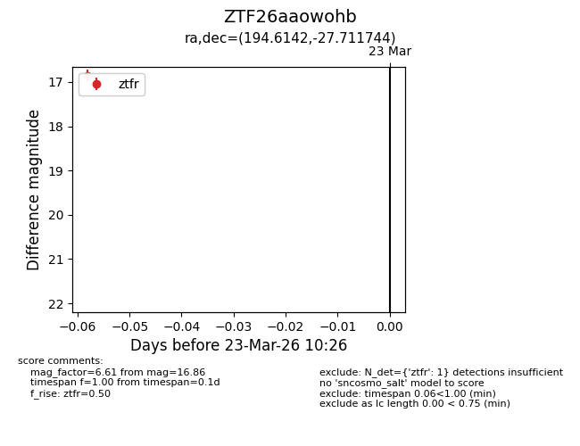
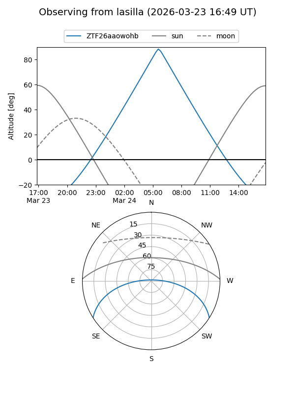
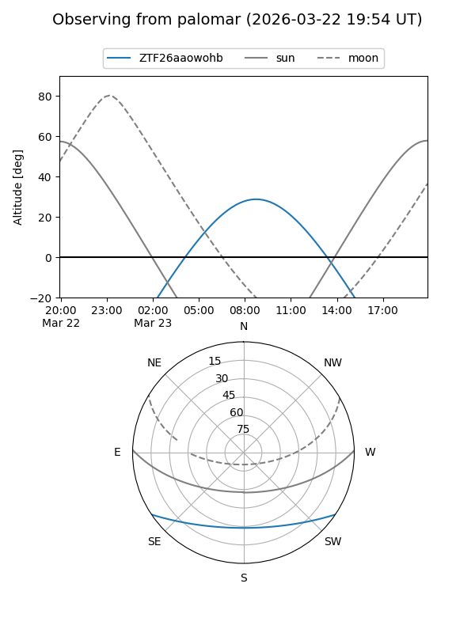

ZTF26aaowohb
Target ZTF26aaowohb at 2026-03-23 10:28
Aliases and brokers:
FINK: link
Lasair: link
ALeRCE: link
alt names
ZTF26aaowohb (ztf,fink_ztf)
Coordinates:
equatorial (ra, dec) = 194.6142,-27.71174
equatorial (HMS+DMS) = 12:58:27.42,-27:42:42.28
galactic (l, b) = (304.8316,+35.13411)
Flags:
Photometry:
last ztfr=16.86
1 ztfr detections
Lightcurve

Visibility


Additional plots